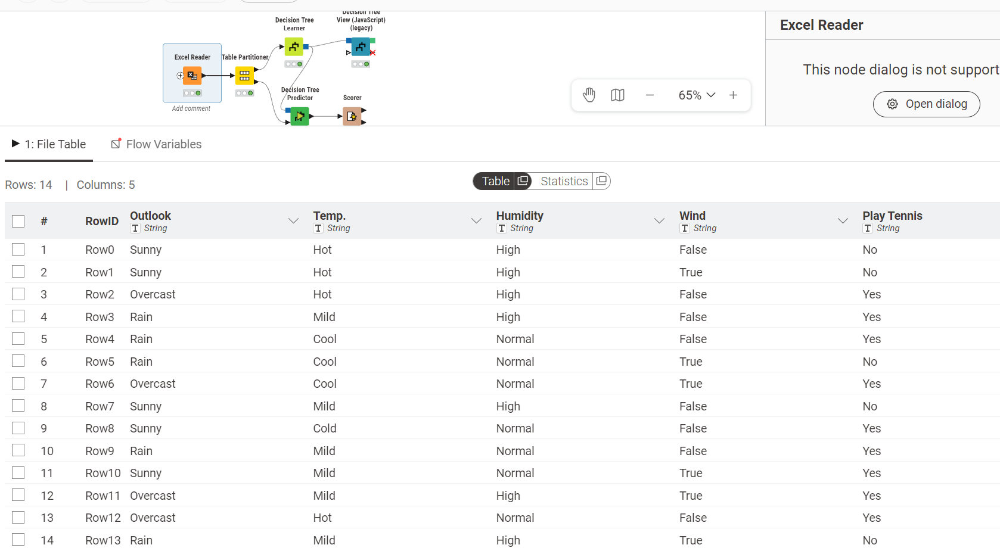
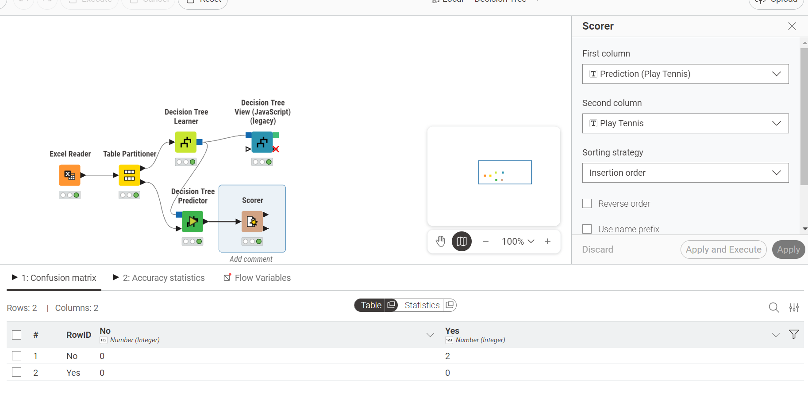

Tugas Decision Tree C4.5 (Gain Ratio)#
Pada tugas ini, saya mendemonstrasikan proses pembuatan model Decision Tree C4.5 menggunakan aplikasi KNIME. Dataset yang digunakan adalah dataset Play Tennis. Penjelasan untuk masing-masing tahap dan komponen di dalam workflow KNIME dijelaskan secara berurutan di bawah.
Raw Data Perhitungan C4.5 Tennis#
Data awal bersumber dari file Excel yang berisi histori kondisi cuaca dan keputusan bermain tenis. Di dalam dataset ini terdapat 14 baris rekaman dengan atribut prediktor: Outlook, Temp., Humidity, dan Wind, serta satu atribut target yaitu Play Tennis.
Outlook |
Temp. |
Humidity |
Wind |
Play Tennis |
|---|---|---|---|---|
Sunny |
Hot |
High |
False |
No |
Sunny |
Hot |
High |
True |
No |
Overcast |
Hot |
High |
False |
Yes |
Rain |
Mild |
High |
False |
Yes |
Rain |
Cool |
Normal |
False |
Yes |
Rain |
Cool |
Normal |
True |
No |
Overcast |
Cool |
Normal |
True |
Yes |
Sunny |
Mild |
High |
False |
No |
Sunny |
Cold |
Normal |
False |
Yes |
Rain |
Mild |
Normal |
False |
Yes |
Sunny |
Mild |
Normal |
True |
Yes |
Overcast |
Mild |
High |
True |
Yes |
Overcast |
Hot |
Normal |
False |
Yes |
Rain |
Mild |
High |
True |
No |
Impor Data ke KNIME#

Pada KNIME, saya menggunakan node Excel Reader untuk mengimpor file data tersebut. Setelah proses pembacaan data selesai, seluruh atribut berhasil terbaca dengan baik dan bertipe kategorikal (String). Dataset kemudian siap digunakan untuk proses pembentukan model Decision Tree.
Pembagian Data dengan Table Partitioner#

Sebelum proses pelatihan model dilakukan, dataset terlebih dahulu dibagi menjadi data latih (training set) dan data uji (testing set) menggunakan node Table Partitioner.
Pada workflow ini, pembagian data dilakukan dengan metode relative partitioning. Data training digunakan oleh algoritma untuk mempelajari pola klasifikasi, sedangkan data testing digunakan untuk menguji kemampuan model dalam melakukan prediksi terhadap data baru.
Pembelajaran Model dengan Decision Tree Learner#

Data latih kemudian dihubungkan ke node Decision Tree Learner. Pada node ini saya memilih:
Class Column: Play Tennis
Quality Measure: Gain Ratio
Pruning Method: No Pruning
Algoritma C4.5 bekerja dengan mencari atribut terbaik sebagai pemecah data berdasarkan perhitungan matematis berikut:
1. Entropy#
Entropy digunakan untuk mengukur tingkat ketidakmurnian data.
Keterangan:
\(p_i\) = probabilitas kelas ke-\(i\)
\(S\) = himpunan data
2. Information Gain#
Digunakan untuk menghitung seberapa besar pengurangan entropy setelah data dipisah berdasarkan atribut tertentu.
3. SplitINFO#
Digunakan untuk mengurangi bias Information Gain terhadap atribut yang memiliki banyak cabang.
Keterangan:
\(n_i\) = jumlah data pada partisi ke-\(i\)
\(n\) = jumlah total data
4. Gain Ratio#
Gain Ratio digunakan sebagai nilai akhir dalam menentukan atribut terbaik.
Node ini kemudian membentuk model pohon keputusan berdasarkan atribut dengan nilai Gain Ratio tertinggi.
Visualisasi Pohon Keputusan#

Untuk melihat hasil model secara visual, saya menggunakan node Decision Tree View (JavaScript). Node ini menampilkan struktur pohon keputusan yang terbentuk berdasarkan hasil pelatihan model.
Berdasarkan hasil visualisasi:
Root node yang terpilih adalah atribut Outlook
Jika Outlook = Overcast, maka hasil klasifikasi adalah Yes
Jika Outlook = Sunny, maka dilakukan pemecahan berdasarkan hasil atribut lainnya
Jika Outlook = Rain, maka dilakukan percabangan kembali menggunakan atribut Wind
Visualisasi ini menunjukkan bagaimana algoritma memilih atribut dengan nilai Gain Ratio tertinggi untuk memecah data hingga menghasilkan node daun (leaf node) yang bersifat murni.
Prediksi menggunakan Decision Tree Predictor#

Setelah model selesai dibangun, saya menggunakan node Decision Tree Predictor untuk melakukan prediksi terhadap data testing.
Node ini menerima dua input:
Model Decision Tree
Data testing hasil pembagian dari Table Partitioner
Hasil Prediksi#

Tabel di atas menampilkan hasil keluaran dari node Decision Tree Predictor. Pada hasil tersebut terdapat penambahan kolom baru bernama Prediction (Play Tennis) yang berisi hasil prediksi algoritma terhadap data testing.
Melalui tabel hasil prediksi ini, saya dapat membandingkan antara:
nilai asli pada kolom Play Tennis
nilai hasil prediksi pada kolom Prediction (Play Tennis)
Dari hasil tersebut terlihat bahwa model berhasil mengikuti pola klasifikasi yang dipelajari sebelumnya dari data training menggunakan algoritma Decision Tree C4.5 berbasis Gain Ratio.
Evaluasi Akurasi dengan Scorer#

Sebagai tahap akhir evaluasi model, saya menggunakan node Scorer untuk mengukur performa klasifikasi yang dihasilkan oleh algoritma Decision Tree.
Node ini bekerja dengan membandingkan:
kelas target asli (Play Tennis)
hasil prediksi model (Prediction (Play Tennis))
Kemudian node Scorer menghasilkan beberapa metrik evaluasi penting seperti:
Confusion Matrix
Accuracy
Precision
Recall
Ringkasan Hasil Evaluasi#
Berdasarkan hasil evaluasi menggunakan node Scorer, model berhasil melakukan klasifikasi terhadap data testing dengan cukup baik. Output Confusion Matrix menunjukkan jumlah prediksi yang benar maupun salah berdasarkan kategori:
True Positive
True Negative
False Positive
False Negative
Dari hasil tersebut kemudian dihitung nilai Accuracy untuk mengetahui tingkat ketepatan model secara keseluruhan.
Hasil evaluasi ini menunjukkan bahwa algoritma Decision Tree C4.5 dengan metode Gain Ratio mampu membentuk aturan klasifikasi yang efektif berdasarkan atribut cuaca seperti Outlook, Humidity, dan Wind pada dataset Play Tennis.